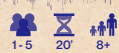
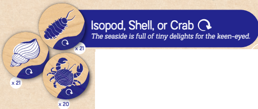
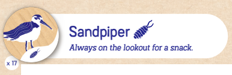
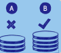
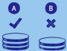
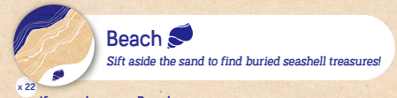
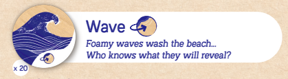
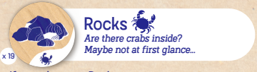

Seaside
Board Game Arena 官方规则文档

The sun is shining, as a light, salty wind sends cottony clouds scudding across the sky. Sandpipers filling their bellies with strange insects, crabs hiding under piles of rocks, seashells washed up on the sand, curling waves that break along the beach. Nature in its simplest beauty. One token at a time, create your Seaside with the elements the sea sends your way
Goal
To have the highest stack of tokens.
Setup
Put all tokens in the Bag and mix them up.
- 4-5 players: Play with all the tokens.
- 3 players: Remove 15 to 20 tokens at random from the bag.
- 2 players: Remove 30 to 40 tokens at random from the bag.
Place the removed tokens aside; they will not be used in the game.
Gameplay
Play moves in clockwise direction. The last player to have wet their feet in the sea begins
- On your turn, draw a token from the Bag, look at it secretly, choose the side that interests you and apply its effect. Once you have chosen the side of the token you'd like to play, it will remain like that for the rest of the game.
- Once you've applied the token's effect (see below), your turn is over; pass the Bag to the player on your left
Token Effects
There are two types of token:
Sea
Tokens with a blue design are thrown into the sea.
Seaside
Tokens with a white design are placed on your Seaside.
Isopod, Shell or Crab

If you choose the Isopod (the bug), the Shell, or the Crab:
- Place the token into the Sea (in the center of the play area);
- Then immediately take another turn (draw another token from the bag and apply its effect).
Sandpiper

If you choose the Sandpiper:
- Add it to your Seaside;
- Take as many Isopods as you wish from the Sea,
Add them beneath your Sandpiper token to form a Sandpiper Stack.
You are allowed to take no Isopods at all if you wish
Careful!
If you create a new Sandpiper Stack, and...
- it is the same size as the one(s) on your Seaside: → You may keep it on your Seaside
- it is smaller than the one(s) on your Seaside: → You must discard it immediately
- it is larger than the one(s) on your Seaside: → You must discard all smaller Stacks and keep the new, larger one
Example 1
Example: If you have a 3-token Sandpiper Stack A and you take a 4-token one B you must discard your 3-token Stack.

Example 2
Example: If you have a 3-token Stack A and you take a 2-token one B , you must discard the smaller one: The 2-token one you just took.

Beaches

If you choose a Beach:
- Add it to your Seaside,
- Take up to as many Shells from the Sea as the total number of Beaches on your Seaside, including the one you just placed.
If there are no Shells in the sea, you can still place a Beach on your Seaside... this is called planning ahead!
Keep your Beaches next to each other on your Seaside to easily see how many you have. Place your Shells in a stack
Example
If you add a third Beach to your Seaside, take up to 3 Shells from the Sea. On a future turn, if you add a 4th Beach to your Seaside, you can take up to 4 Shells from the sea.
Waves

If you choose a Wave:
- Add it to your Seaside,
- You must flip over one of your Beaches, if you have one. You are allowed to look at the other side of your Beaches to choose which one would be best to flip over.
- Immediately apply the effect of what was hidden on the other side of the Beach play the newly-flipped token exactly as though you had drawn it from the Bag.
Place all your Waves in a stack
Example
If you flip over a Shell, place it into the sea and re-draw a token from the bag. If you flip a Wave, flip over another Beach
Rocks

If you choose a Rock:
- Place it on your Seaside. The Rocks work in pairs:
- The 1st Rock has no immediate effect. Your turn ends.
- The 2nd Rock forms a Crab Habitat. Place the second Rock on top of the first one and add all the Crabs in the Sea, plus one Crab from one other player of your choice, to your Seaside. You can always do this action even if no other players have Crab tokens or there are no crabs in the Sea.
Make a pile with all your Crabs.
Example
If you take a third Rock later in the game, it does nothing. Your fourth Rock will create a second Crab Habitat, allowing you to collect Crabs a second time.
End of Game
As soon as the Bag is empty, the game is over.
- The player with the most Waves takes all the tokens remaining in the Sea. In the case of a draw, distribute the tokens in the Sea equally amongst all tied players. → If you are unable to equally distribute the tokens, leave any extras in the Sea. → If nobody has any Waves on their Seaside, the tokens remain in the Sea.
- Stack up all the tokens from your Seaside.
- Compare it to the other players' stacks. The highest one is the winner! In the case of a draw, all tied players share the victory
Solo Mode
Add all the tokens to the bag and shake it up.
The game follows exactly the same rules, with the following modifications:
- If you add a 7th Beach, 7th Wave, 7th Sandpiper, or 7th Rock to your Seaside, the game ends immediately, without applying the effect of that token.
- If you add a 7th token into the Sea (any Isopod, Shell, or Crab token), the game also ends immediately.
∼
When the game is finished:
- Collect all the tokens in the Sea if you have at least 1 Wave on your Seaside.
- Count the tokens in front of you, including the 7th token played, as you would in the basic game.
Consult the table below to see how your Seaside excursion went:
| Score | Result |
|---|---|
| 0-19 | The wind, rain, and cold have cut your walk short. |
| 20-29 | It was a grey day, but the salt air was invigorating. |
| 30-39 | The wind was blowing hard and the sea was imposing. A bit scary but also a bit exciting! |
| 40-49 | A very satisfying outing! Your mind is filled with wonderful memories. |
| 50-59 | The sun was shining, the waves were magnificent, and nature showed itself in all its splendour |
| 60+ | You have discovered a completely unmatched and unique beach! This was a once-in-a-lifetime experience. |